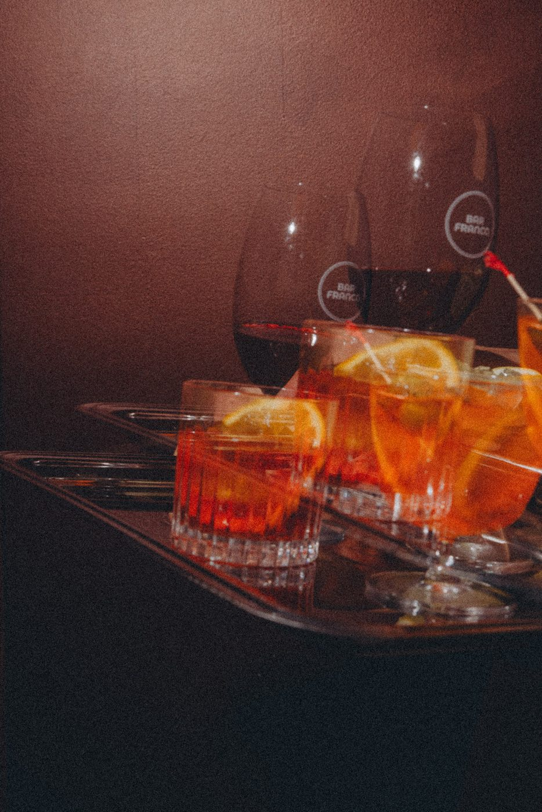

Downstairs at Franco · Christchurch CBD
The Spritz &
Negroni Bar
Downstairs, the bar keeps the tempo. A proper Negroni, a spritz that catches the afternoon, an aperitivo before dinner upstairs. Serious about the drink, never about ourselves.
The best Negroni in Christchurch
(we'd argue)
Equal parts gin, Campari and vermouth, stirred down and served with a twist — the icon of the occasion, and the house ritual.
Not in a bitter mood? Spritzes, classic cocktails done properly, prosecco, an Italian wine list, and low- and no-alcohol options.

A drink for every mood
Negronis
The classic, plus a rotating twist for the curious.
Spritzes
Aperol, Campari, limoncello — bright and sparkling.
Classic cocktails
Done properly. Tell us the mood and we'll point you right.
Wine & bubbles
Prosecco and an Italian-leaning list by the glass or bottle.


Drinks downstairs, dinner upstairs
Pull up a stool for a drink and a plate of cicchetti. When you're ready, head upstairs to the open kitchen for handmade pasta.
Come for one, stay for both.
Questions
Do I need to book for the bar?
Walk-ins are welcome downstairs. To dine, or for a group, book a table.
What's the signature drink?
The Negroni — the house ritual — alongside spritzes, classic cocktails and Italian wine.
What time do you open?
Daily from 4pm, pouring till late. The kitchen upstairs opens at 5pm.
Can we come just for drinks?
Absolutely — no dinner required. Stay for cicchetti if the mood takes you.
Do you do cocktail functions?
From a stand-up party to the whole venue — see private events.
Pull up a stool
A night that starts at the bar and ends upstairs. Daily from 4pm, till late.